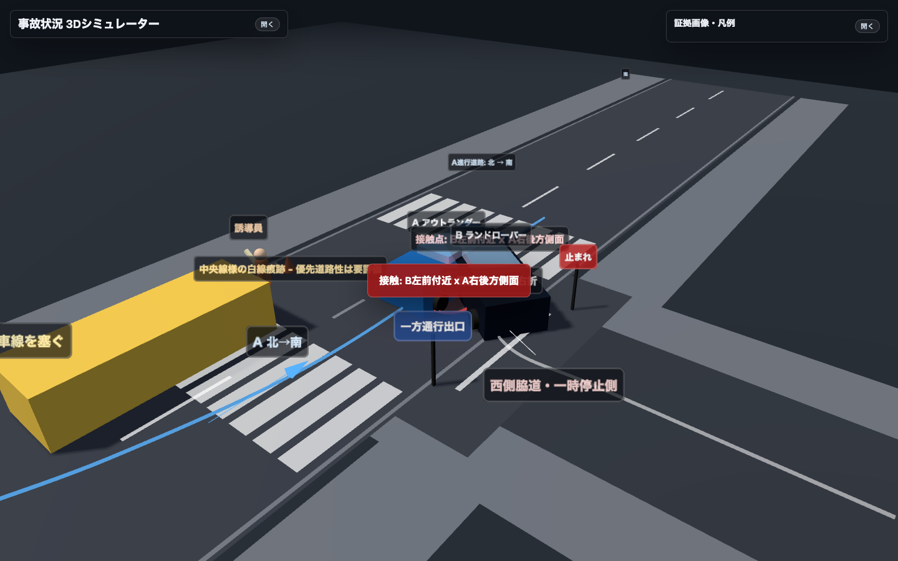

事故状況資料
ワンリンク版
事故状況、6/23現地再訪の白線写真、ドラレコ重要フレーム、3Dシミュレーター、ドラレコ映像リンクに加え、6/26以降の修理見積・代車・保険会社連絡・弁護士委任・通院対応の進捗を追記しています。
最終更新: 2026-07-02。公開URLで共有する場合も、完全な認証付きページではありません。転送・再共有は必要最小限にしてください。診断書、領収書、精算金額、医療/保険チャット画像は公開版から除外しています。

3Dシミュレーターを開く
PDF
事故状況ブリーフ
6/23公開版PDF。6/30以降の差分は本ページ上部に追記。
3D
3Dシミュレーター
空間関係の説明補助。PC推奨。
動画
ドラレコ生映像
Google Driveの限定共有で確認。
HTML
印刷用HTML
PDFの元ページ。ブラウザ確認用。
2026-07-02 最新アップデート
三菱目黒店 概算修理見積税込673,376円
入庫候補2026-07-09
修理期間見込み2〜3週間
弁護士委任物損・人身
修理見積・損傷範囲
2026-06-26に東日本三菱自動車販売 目黒店で概算見積を取得。右Rrドア、右クォータアウタパネル、右Rrディスクホイール、右EVチャージリッド周辺、Rrバンパフェース修理塗装、ADAS/カメラ調整等が含まれる。分解後に追加損傷が出る可能性あり。
代車・入庫時期
代車は出してもらえる方向。三菱からは2026-07-09入庫、修理期間2〜3週間程度との説明。ただし2026-07-19にアウトランダーPHEVの外部給電を使う予定があるため、入庫を7/19以降にずらすことの可否・不利益を確認したい。
保険会社連絡
あいおいニッセイ同和損保の担当者様から、三菱目黒店との対応は進んでいるので安心してよい、弁護士事務所が決まったら教えてほしい旨の連絡あり。担当者様には返信済み。弁護士委任後の窓口整理を進める。
弁護士委任状況
2026-06-30に堀法律事務所の福田隆行弁護士と面談。物損・人身の両面で委任する方針を相手方保険会社へ伝達済み。
人身・通院対応
2026-07-02時点で、相手方保険会社と医療機関側の連絡は取れており、一括対応へ移行。通院は継続中。診断書、領収書、精算金額などの詳細は非公開資料で管理する。
継続確認ポイント
修理開始時期、代車、保険会社との窓口切替、通院継続に伴う記録管理を継続して整理する。
注意
本追記は相談用整理であり、過失割合、車両保険使用可否、代車費用請求可否、修理延期の有利不利、治療・精算上の判断を断定するものではありません。
事故状況の要点
A車は北側から南側へ進行中。横断歩道はA車進行方向上ではなく西側脇道側にあり、脇道側の停止線は交差点口より奥まっている。
工事車両はAから見て交差点を越えた直後の本来車線上にあり、Aは交差点内で反対側寄りへ進路変更を強いられた。
B車は西側の奥まった一時停止側から右折初動で出て、A車右後方側面へ接触したと見られる。
北側の信号待ち停車2台によりB側の左方視界が制約された可能性がある。一方でA側からB停止を確認できており、左方確認・前方注視・誘導誤認が重要な確認事項。
整合チェック
地図: 脇道は西側。横断歩道はA車進行方向上ではなく脇道側。脇道停止線は交差点口より奥まっている。
写真: 6/23現地写真で交差点内の白線痕跡を確認。優先道路性への影響は弁護士確認事項。
ドラレコ: A車は工事車両回避のため交差点内で反対側寄りへ進行し、接触はA車右後方側面付近。B車がA車通過後も接近継続していたかを原本で確認したい。
証言・発言: B側が誘導を誤認した旨の発言があるため、相手方ドラレコ、相手方の正確な発言、誘導員証言を取得したい。
ドラレコ生映像
重要画像
{kind=link}
{kind=link}
{kind=link}
{kind=link}
{kind=link}
{kind=link}
{kind=link}
3Dシミュレーターは法的評価・鑑定ではなく、ドラレコと写真から把握できる空間関係の説明補助です。白線痕跡が優先道路性を確定させるものとは断定していません。